Selected work / VR installation
Journey to
the Forgotten
A body-centered VR journey
A VR interactive experience that explores embodiment in virtual space through spatial layout, bodily movement, and interaction design. By staging resistance, ritualized motion, and attention-driven environments, the work shifts VR away from mind-centric control toward physical awareness. Its goal is to reframe immersion as an embodied process of participation and acceptance rather than navigation or achievement.
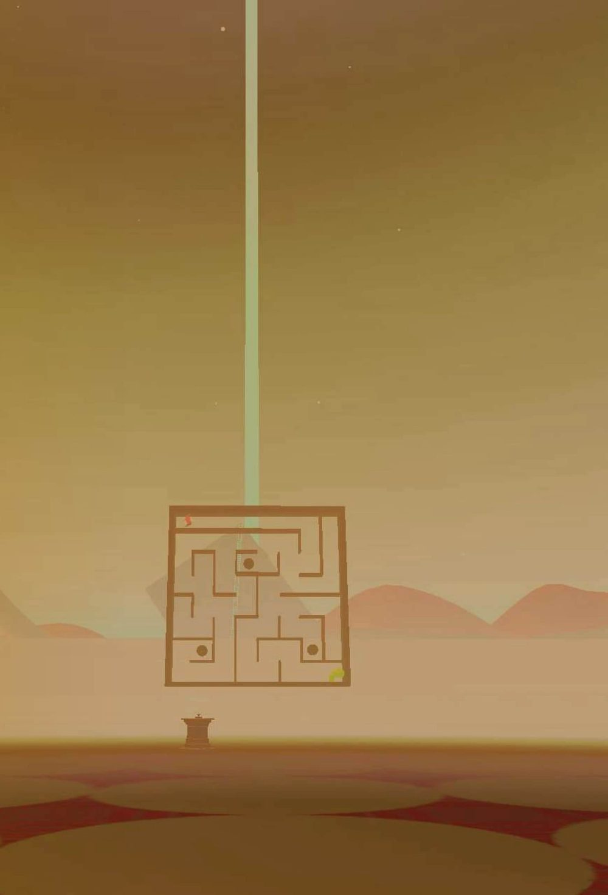
From abstract control to bodily awareness.
Inspiration
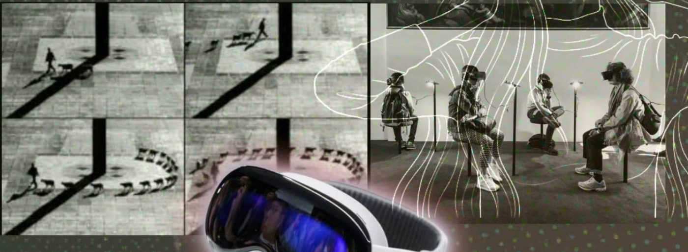
Inspired by Francis Alÿs’ performance Sheep (2002), where collective movement reads like a choreography of the mind: drifting attention, social gravity, and quiet surrender.
In VR, participants are often treated as primarily “attention-centric” viewers, present through attention but detached from physical consequence.
How can a virtual world guide players from abstract control to bodily awareness through interaction alone?
Rather than telling a story through narrative, this project treats the body itself as the narrative medium.
Problem: interaction as a design material
Many VR experiences mistake immersion for participation, leaving users visually present but agency-less: disembodied observers. That exposes ethical flaws in interaction design.
- Immersion ≠ participation
- Voyeuristic immersion
- Disembodied presence
- Loss of participant subjectivity
- Interaction as ethical positioning
Conclusion
With interaction understood as a material that shapes participant subjectivity, I approached the design process as a gradual reconstruction of the body’s role in virtual space.
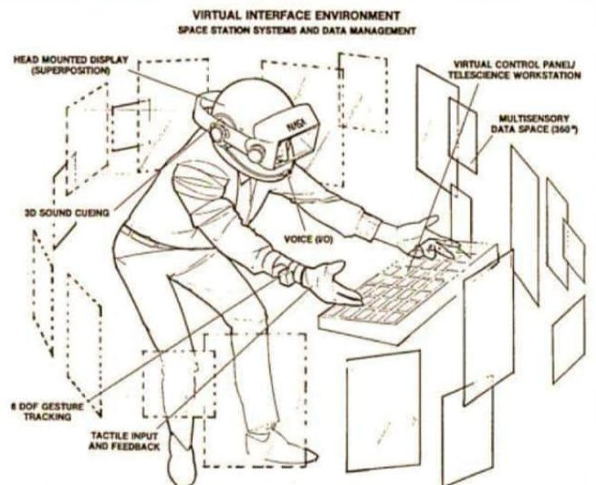
Ideation: a spectrum of interaction in VR
Rather than treating interaction as a fixed category, I frame VR interaction as a spectrum of bodily involvement, from visual immersion to embodied participation:
- Fixed camera position
- No bodily consequence
- No agency beyond attention
- Strong voyeuristic positioning
- Relies on buttons, joysticks, and triggers
- Efficient and familiar
- Agency without embodiment
- The body operates the system from outside
- Increased presence
- Partial embodiment
- The body functions primarily as a tool
- Sustained physical effort
- Rhythm, posture, and repetition matter
- Movement carries emotional and expressive meaning
Participants are a point of view.The body itself becomes the interface.
Game flow map
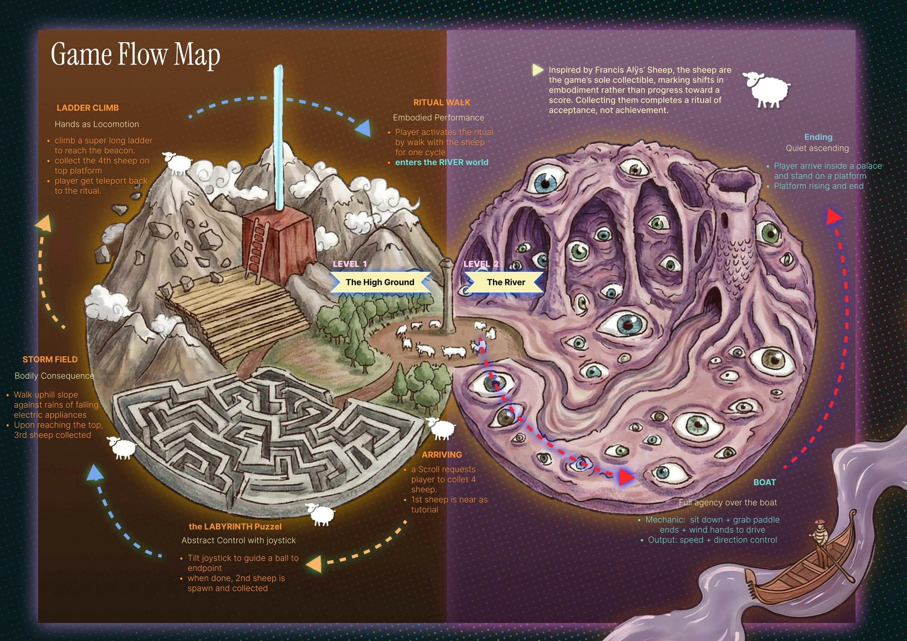
Inspired by Francis Alÿs’ Sheep, the sheep are the game’s only collectible. They mark shifts in embodiment rather than progress toward a score: collecting them completes a ritual of acceptance, not achievement.
Level 1
The High Ground
-
Arriving
- A scroll asks the player to collect 4 sheep
- The 1st sheep is close by, as a tutorial
-
The labyrinth puzzle
Abstract control with a joystick
- Tilt the joystick to guide a ball to the endpoint
- Once it’s solved, the 2nd sheep appears and is collected
-
Storm field
Bodily consequence
- Walk uphill against a rain of falling electric appliances
- At the top, the 3rd sheep is collected
-
Ladder climb
Hands as locomotion
- Climb a very long ladder to reach the beacon
- Collect the 4th sheep on the top platform
- The player is teleported back to the ritual
-
Ritual walk
Embodied performance
- Walking one full cycle with the sheep activates the ritual
- The player enters the River world
Level 2
The River
-
Boat
Full agency over the boat
- Mechanic: sit down, grab the paddle ends, and wind your hands to drive
- Output: speed and direction
-
Ending
Quiet ascending
- The player arrives inside a palace and stands on a platform
- The platform rises, and the experience ends
Design development
Visual reference
I draw visual inspiration from LSD, citypunk, and brutalism. LSD informs hallucinatory perception and fluid reality; citypunk shapes dense, hyper-urban atmospheres; brutalism grounds the world through raw structure, weight, and uncompromising material presence.
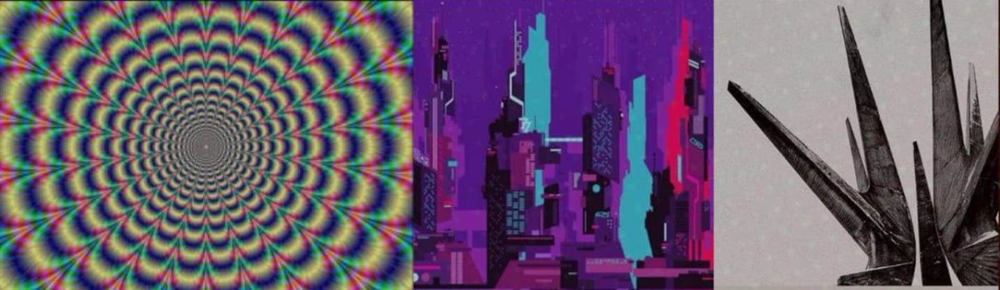
Sketches & 3D modeling
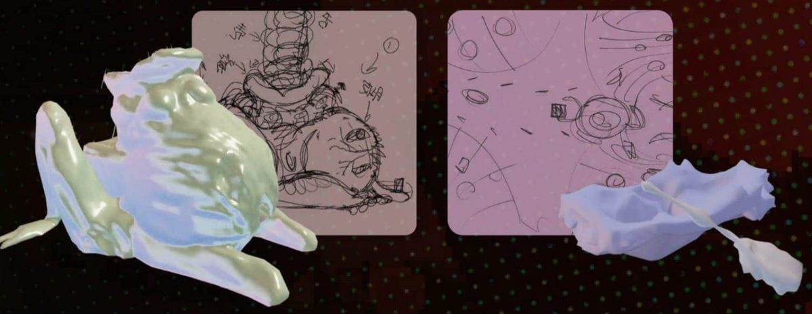
Fog + volume
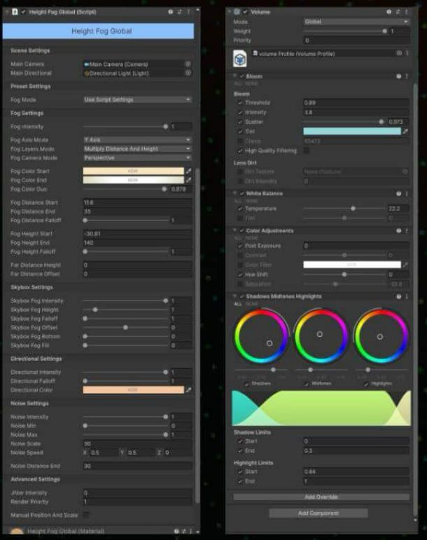
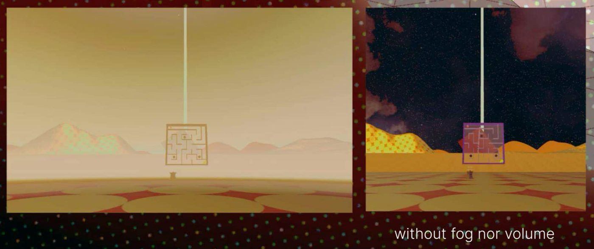
Spatial structure & atmosphere
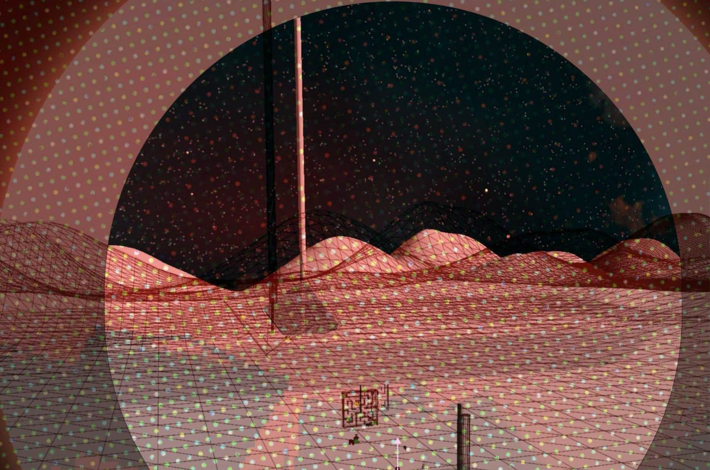
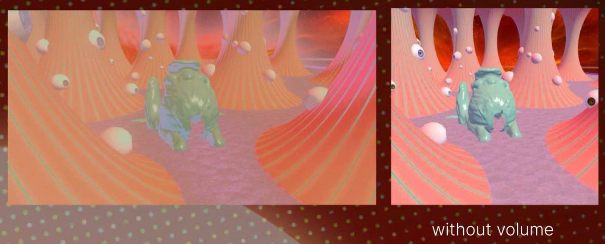
Audio design
Sound as attentional framing
Gaze-activated audio cues
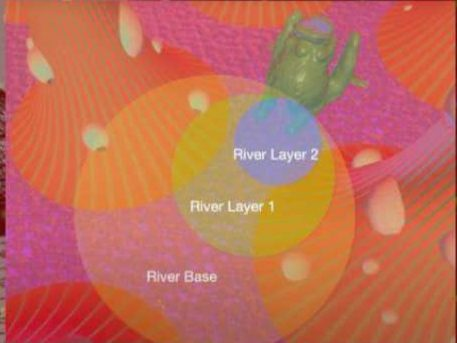
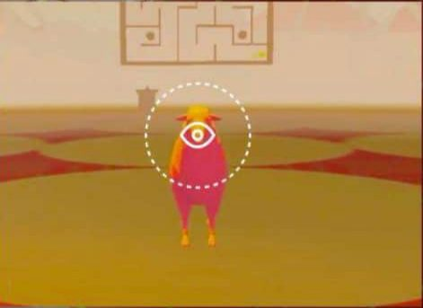
Interaction core: body-centered
From mind-led control to embodied agency
This experience is structured as a gradual relocation of movement and attention into the body. Rather than treating embodiment as a single state, the design stages how different parts of the body come online over time, shifting the participant from abstract control toward physical presence, effort, and acceptance.
-
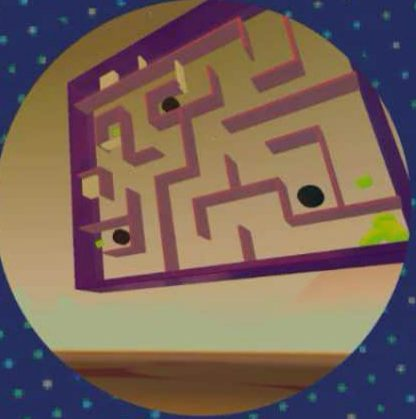
Head / mind — orientation & precision
The body is present primarily as perception and fine motor control.
At the beginning of the experience, interaction is mind-led. Attention is focused on reading, looking, and precise hand control. The participant relates to the world through cognition and accuracy, reflecting a familiar, mind-centric mode of VR interaction.
-
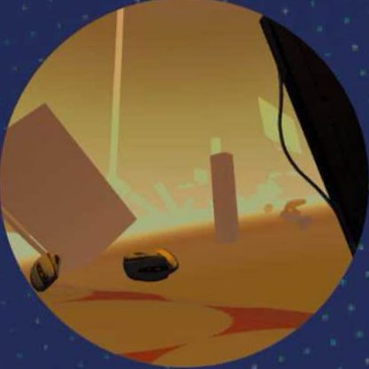
Torso / balance — bodily resistance
The body becomes something that can be displaced, resisted, and corrected.
As falling objects knock the participant backward, the body is no longer neutral. Balance, position, and recovery matter. Attention shifts from solving to stabilizing, marking the first moment where the participant must account for their physical presence.
-
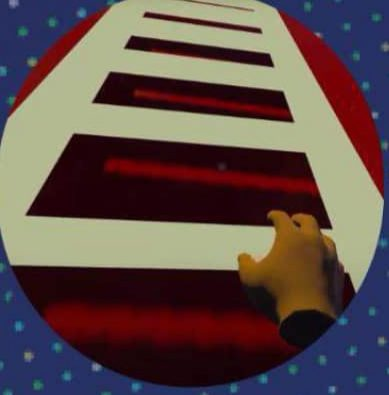
Arms & hands — labor and effort
The hands become engines of movement.
Climbing requires repeated grabbing and dragging motions. Progress depends on effort and rhythm rather than input efficiency. The body is now a tool that must work, introducing labor as a core interaction quality.
-
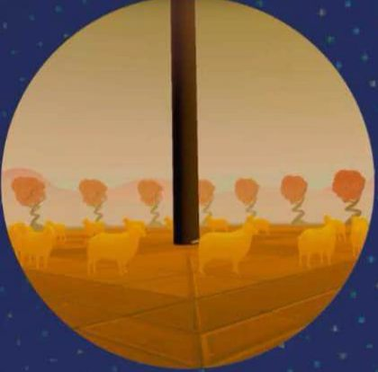
Legs — ritualized movement
Legs carry the body in slow, synchronized motion.
Walking in a circle with the sheep shifts movement from effort to acceptance. The legs are no longer overcoming resistance; they sustain rhythm. Becoming part of the flock reframes movement as belonging rather than task completion.
-
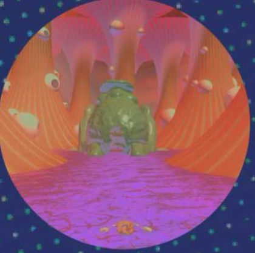
Full body — embodied agency
The body generates motion and pace.
Although seated, the body is fully engaged. The legs ground the posture, while the arms generate propulsion through pedaling gestures. Movement is authored through rhythm and coordination rather than standing locomotion.
-
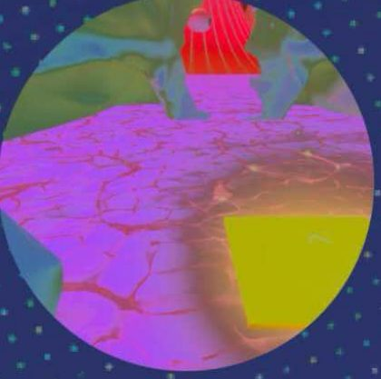
Still body — reflection
The body rests; attention turns inward.
The experience ends without action. After sustained effort, stillness allows bodily memory to settle, leaving space for reflection rather than narrative closure.
Touch as claim and recognition
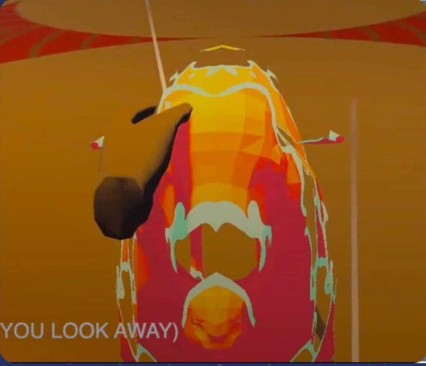
Sheep are collected through direct hand contact, an intentionally simple and repeated gesture. Touch functions as a human act of claiming and acknowledging presence, grounding reward in physical proximity rather than abstraction. By being handled instead of earned, the sheep reinforce the body as the site of meaning-making.
Level 1 High Ground: spatial design
Using space to stage bodily awareness
The spatial layout is designed as an active agent in shaping embodiment rather than a neutral container. Instead of prioritizing efficiency or spectacle, space is used to guide how the body moves, resists, and settles over time, using distance, elevation, and enclosure to shift attention without explicit instruction.
Establishing orientation through open space
The opening area is open and legible, with long sightlines and minimal physical resistance. This allows attention to settle before movement begins. The body remains mostly static, reinforcing a mind-led mode of interaction where observation and understanding come first. A beam shining in the distance establishes direction and attention.
Key words: flat ground | clear landmarks
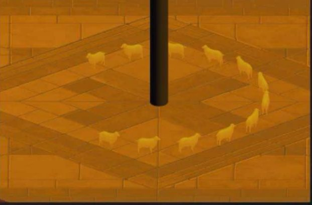
Game point 1
Resolving tension through circular completion
The ritual area is arranged as a near-complete circle, with a visible gap left among the sheep.
The missing segment activates an instinct to complete the form, inviting the participant to step in and make the circle whole. Progress is communicated through spatial coherence rather than UI indicators.
- Near-complete circular formation
- Body-sized gap inviting occupation
- Completion achieved through occupying space
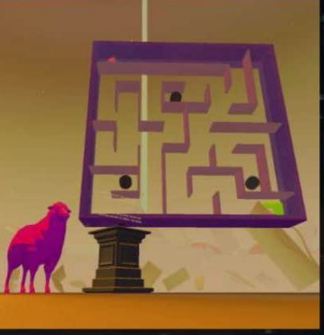
Game point 2
Elevated cognitive space
The labyrinth is suspended in the air, filling the player’s visual field instead of sitting on a surface.
This removes a sense of physical handling and emphasizes visual control and cognition, establishing a disembodied baseline that later embodied interactions contrast against.
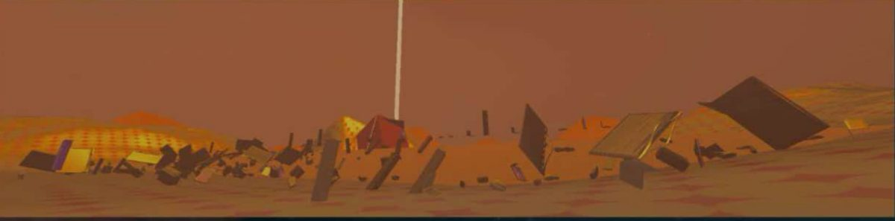
Game point 3
Introducing resistance through slope and direction
The storm field is designed as a long, upward slope with falling obstacles extending beyond the player’s view.
The continuous incline and endless obstacles create a sense of inevitability, positioning the participant against a force of nature. With no alternate route, movement becomes an act of physical persistence rather than navigation.
- Continuous uphill terrain
- Vertically extended obstacle field
- Single forward direction with no bypass routes
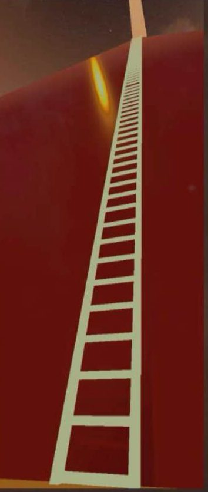
Game point 4
Shifting the body vertically
Vertical movement is introduced after horizontal resistance has been experienced.
While most VR movement remains horizontal, vertical space reframes movement as labor, not navigation. The ladder’s enclosure focuses attention inward, onto repetitive bodily action.
- Vertical shaft
- Limited visual distraction
- Clear upward constraint
Level 1 High Ground: game mechanics
Labyrinth
Interaction typeController-driven rotational input mapped to world-space object rotation.
01Mechanic
- Joystick tilt mapped to X/Z rotation of the labyrinth board
- Physics-driven ball movement with gravity and collision
- Failure state triggered by ball–hole collision, resetting the ball’s position
02Implementation focus
- Tight input sensitivity to emphasize precision
- No body translation or collision involved
- Visual feedback prioritized over physical feedback
03Design takeaway
This interaction isolates fine motor control and cognitive precision. By removing bodily consequence, the mechanic establishes a baseline of mind-led interaction against which later embodied mechanics are contrasted.
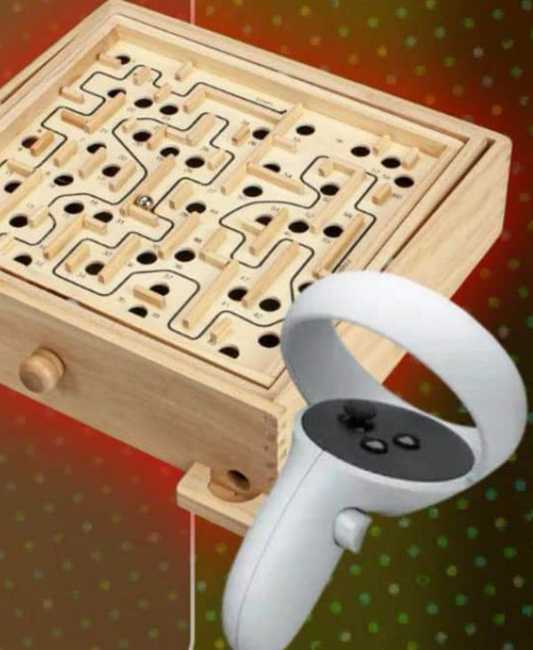
Storm field
Interaction typePhysical locomotion with environment-driven force feedback.
01Mechanic
- Player movement handled through continuous walking locomotion
- Falling objects instantiated with rigidbody physics
- On collision, an impulse force is applied to the player’s movement vector, producing knockback
02Implementation focus
- Knockback magnitude tuned to interrupt progress without disorientation
- No health or damage system; consequence is spatial displacement only
- Objects chosen for readable mass and rolling behavior
03Design takeaway
Introducing collision-based interruption shifts locomotion from navigation to bodily negotiation. The environment gains physical authority, forcing the player to manage balance, position, and recovery rather than optimization.
public class PlayerKnockback : MonoBehaviour
{
private CharacterController characterController;
private Vector3 knockbackDirection;
private float knockbackTimer = 0f;
public float knockbackForce = 10f;
public float knockbackDuration = 0.5f;
void Start()
{
characterController = GetComponent<CharacterController>();
}
void Update()
{
if (knockbackTimer > 0)
{
characterController.Move(knockbackDirection * knockbackForce * Time.deltaTime);
knockbackTimer -= Time.deltaTime;
}
}
public void ApplyKnockback(Vector3 direction)
{
knockbackDirection = direction;
knockbackTimer = knockbackDuration;
}
void OnTriggerEnter(Collider other)
{
if (other.gameObject.CompareTag("Item"))
{
Debug.Log("Got hit by an item");
Vector3 direction = (transform.position - other.transform.position).normalized;
ApplyKnockback(direction);
// Destroy the item after hitting the player
Destroy(other.gameObject);
}
}
}Ladder
Interaction typeDirect hand-to-body translation through grab-and-pull gestures.
01Mechanic
- Hand grab detected via proximity and trigger input
- Vertical player movement calculated as inverse hand displacement
- Continuous grabbing required to maintain upward progress
02Implementation focus
- No teleport or snap movement
- Vertical motion gated entirely by repeated hand actions
- Camera movement directly coupled to body translation
03Design takeaway
This mechanic reframes movement as labor. Vertical progression is slow, repetitive, and effortful, emphasizing physical engagement over efficiency and resisting common VR locomotion shortcuts.
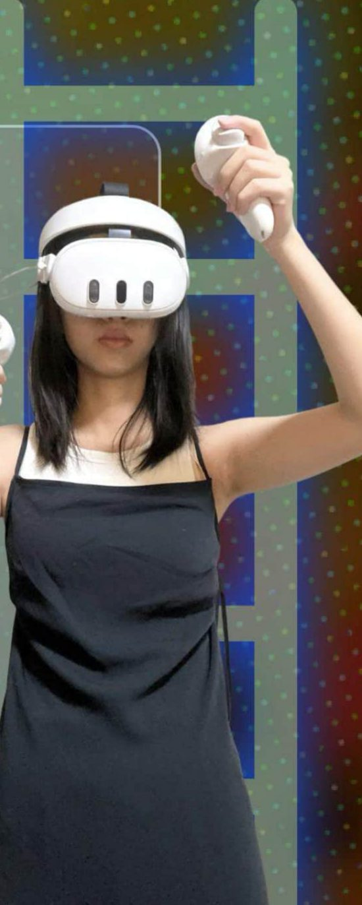
Sheep ritual
Interaction typeBody-positioned spatial alignment and continuous locomotion.
01Mechanic
- The sheep form an incomplete circle that closes when the player walks inside
02Implementation focus
- No buttons; progress is sensed through body placement, movement, and spatial coherence
03Design takeaway
Completion emerges through spatial wholeness, shifting players’ interaction to participation.
Discarded mechanic: following the flock
Early in development, I made the collected sheep follow the participant continuously, a literal reenactment of leading the flock. While visually striking, this conflicted with vertical movement like ladder climbing, and shifted attention toward authorship and spectacle rather than bodily awareness.
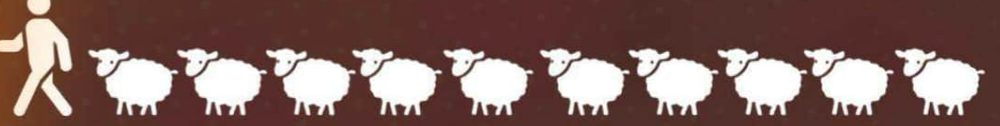
Level 2 River: spatial design and mechanics
This river space is informed by the River Model of immersive storytelling articulated by Jessica Brillhart, which frames immersion as a continuous flow shaped by attention rather than cuts, branching paths, or explicit navigation cues. Instead of encouraging the player to explore freely, the river is designed to guide movement, pacing, and awareness through spatial constraints and perceptual framing.
Compressed forward corridor
The river is enclosed by a dense forest of tall pillars, compressing lateral space and leaving only a narrow opening forward.
By restricting side movement and visibility, the space removes the feeling of open exploration. The river becomes a passage rather than a landscape. Progress is no longer about choosing direction, but about committing to forward motion. This spatial compression naturally guides attention forward, allowing pacing and rhythm to emerge from movement rather than instruction.
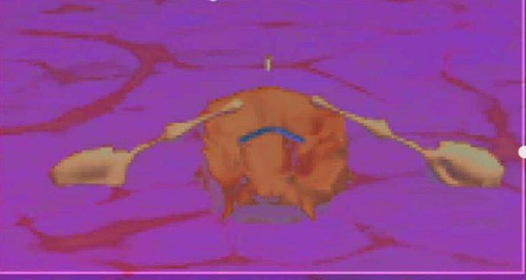
Inverted gaze
Eye-like forms are embedded throughout the pillar forest, oriented toward the river and the participant.
Instead of encouraging visual exploration, the eyes establish a constant sense of being watched. This reverses the usual viewer–world relationship and shifts attention toward bodily awareness during movement.
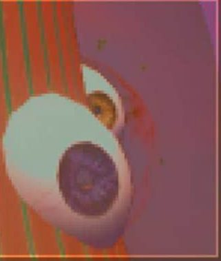
Palace of the womb
The palace is designed as a monumental, enclosing structure with a low opening letting the water inside.
Inspired by the mother’s womb as the origin of the body, the palace emphasizes containment rather than conquest. Its scale and curved form position the belly-like opening as a receiving threshold, reframing the end of the journey as a return to bodily origin and acceptance rather than arrival or achievement.
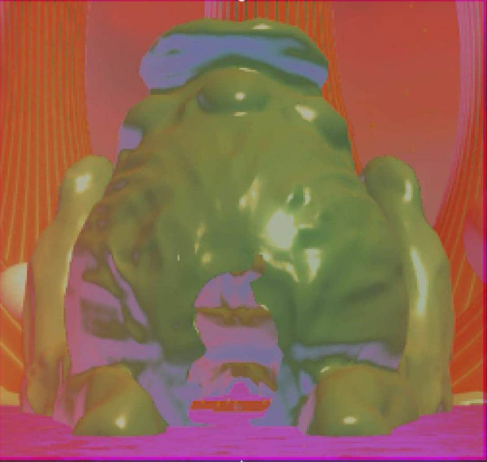
Rising platform
At the end of the river, the player stands on a platform that slowly rises above the environment before fading to white.
The ascent frames the moment as a departure rather than a destination. As the world below comes into view and the eyes return the player’s gaze, the experience shifts toward release. The white fade gently dissolves the virtual space, guiding the player back toward physical reality.
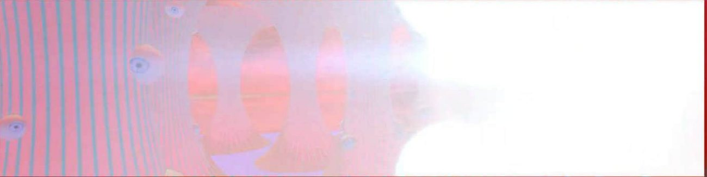
Boat driving
Interaction typeSeated, full-body interaction with arm-driven propulsion.
01Mechanic
- Player seated; leg movement stabilizes posture
- Hand pedaling gestures detected through circular motion tracking
- Speed and direction derived from gesture amplitude and rhythm
02Implementation focus
- No automatic forward motion
- Movement only occurs when rhythmic input is sustained
- Steering and propulsion unified in a single gesture system
03Design takeaway
Rhythmic motion turns locomotion from scripted movement into embodied authorship.
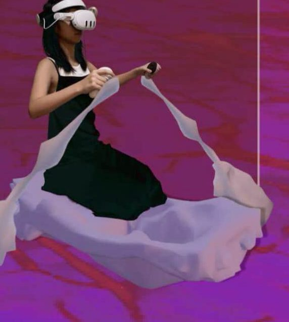
Exhibition
Business As Usual, June 2024
Group exhibition @ EDA, Los Angeles, CA
A two-channel display. Screen #1 shows the sheep ritual view, presenting progression; screen #2 mirrors the player’s in-headset view.
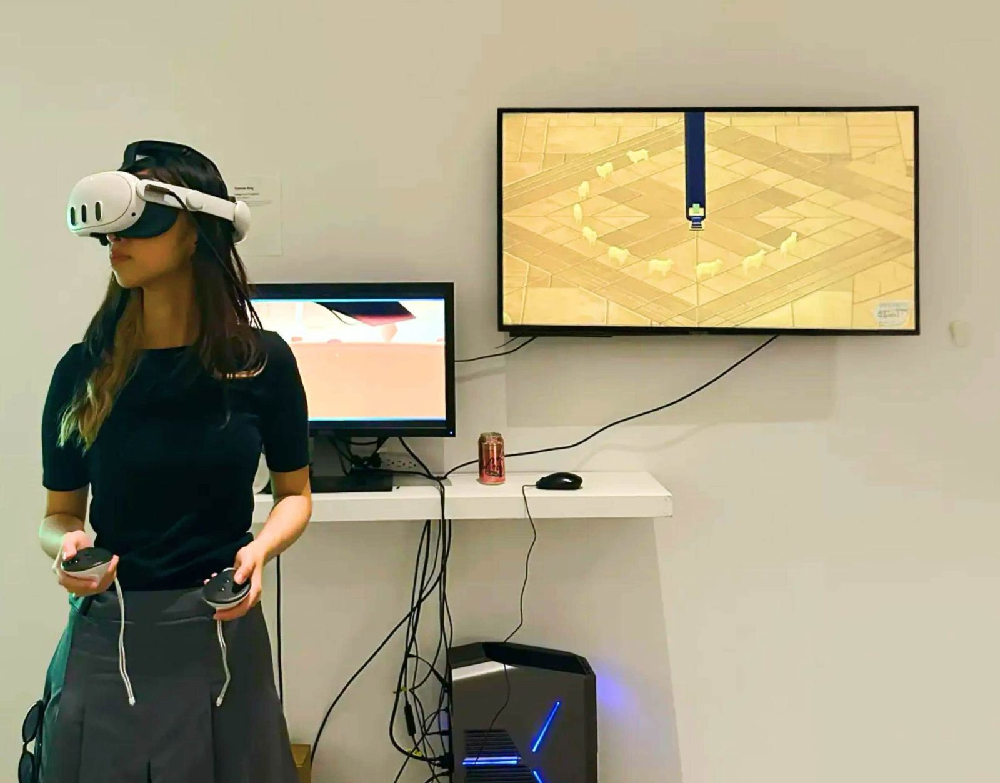
HMD view
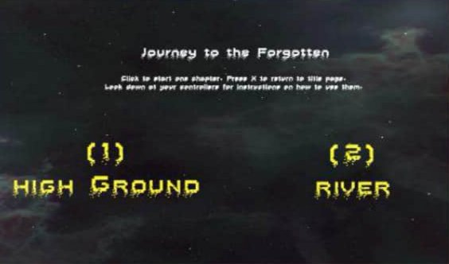
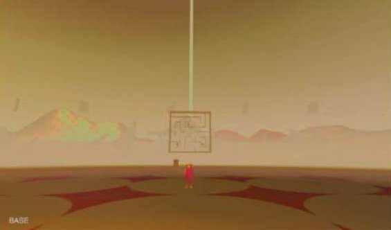
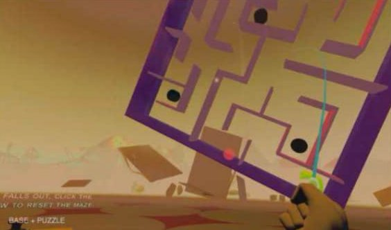
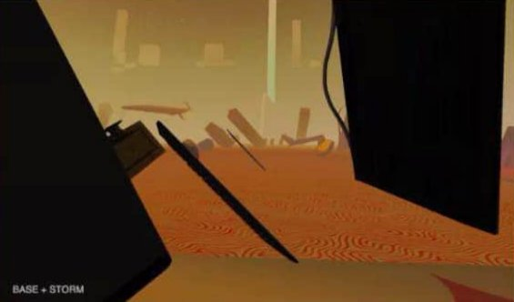
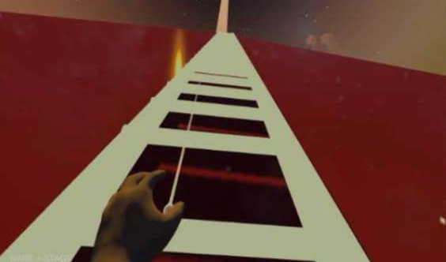
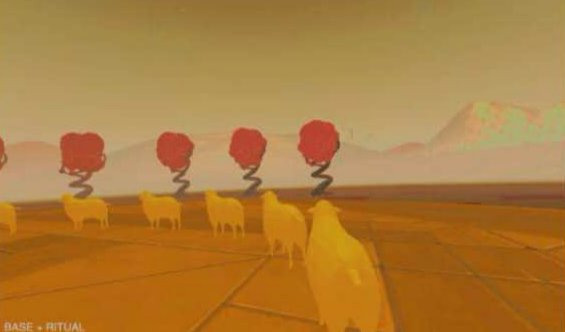
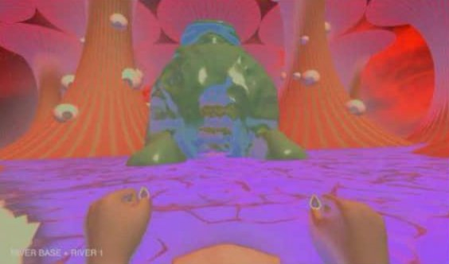
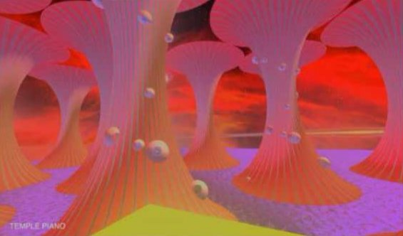
Next step
A next step for this project would be to extend embodiment beyond the headset by integrating physical architecture into the experience. I am interested in exploring a hybrid installation where real pillars are placed in the gallery, allowing participants to walk and complete the ritual through full-body movement without controllers. By aligning virtual space with physical structure, the ritual could be completed through actual walking and spatial alignment, further collapsing the distance between virtual interaction and bodily presence.
Player feedback
Based on feedback from about 20 players during the exhibition, these lines show how the experience was perceived and felt.
I didn’t realize how much my body was doing until the storm pushed me back.
The ladder felt tiring in a way VR usually doesn’t.
Walking with the sheep felt less like finishing a task and more like joining something.
Rowing the boat made me slow down. I stopped trying to get somewhere.
It felt quiet, but not empty.
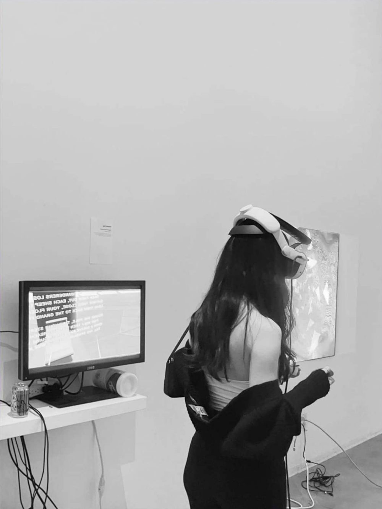
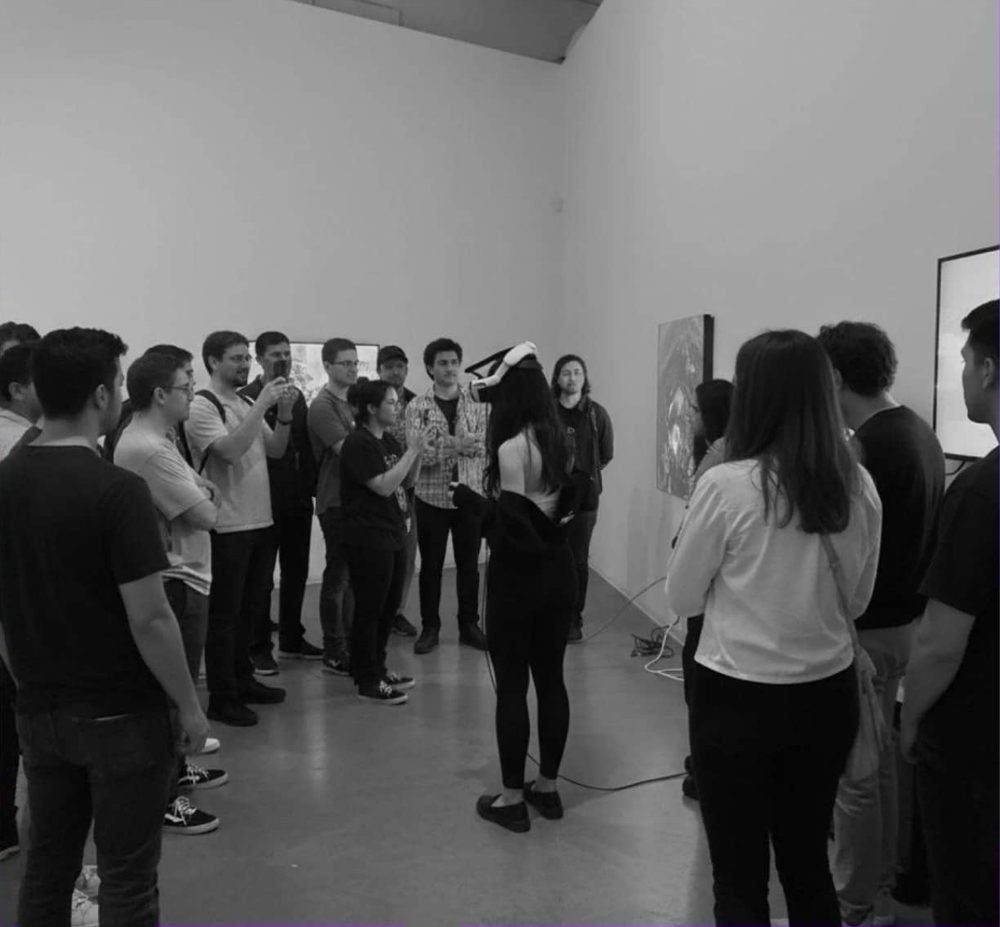
Reflection
Through building and testing the work, I learned to trust minimal mechanics and spatial cues as narrative tools. I successfully translated abstract ideas of collectivity and participation into embodied experiences rather than symbolic representations. Audience feedback revealed that moments of hesitation, alignment, and gradual synchronization were often more memorable than visually dramatic events. This encouraged me to value subtle behavioral shifts as meaningful outcomes, and to see VR not as a spectacle-driven medium, but as one capable of fostering quiet, reflective forms of engagement.
- Project
Solo project by Yolanda Xing
- Original soundtrack